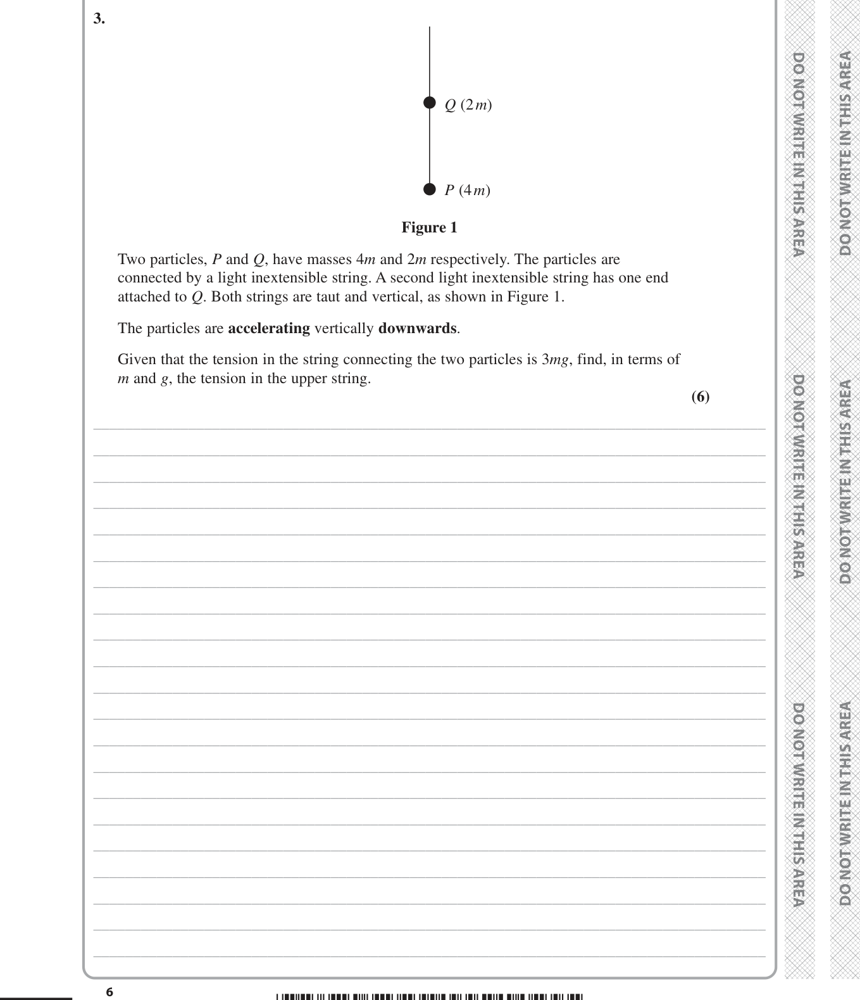

______________________________________ _____________________________________________________________________________________ _____________________________________________________________________________________ _____________________________________________________________________________________ _____________________________________________________________________________________ _____________________________________________________________________________________ _____________________________________________________________________________________ _____________________________________________________________________________________ _____________________________________________________________________________________ _____________________________________________________________________________________ _____________________________________________________________________________________ _____________________________________________________________________________________ _____________________________________________________________________________________ _____________________________________________________________________________________ _____________________________________________________________________________________ _____________________________________________________________________________________ _____________________________________________________________________________________ _____________________________________________________________________________________
We are tackling a problem involving a particle on a rough inclined plane, subjected to an applied force. The particle is stated to be at rest, which means it is in equilibrium ($F_{net}=0$). The core task is to find the maximum possible mass for this equilibrium, implying we need to consider the situation of *limiting equilibrium* where the particle is on the verge of moving.
Our strategy will be to:
Let's assume the following question (as the original was blank):
"A particle P of mass $m$ kg is placed on a rough plane inclined at an angle $\alpha$ to the horizontal, where $\tan \alpha = \frac{3}{4}$. The coefficient of friction between P and the plane is $\mu = 0.5$. A force of magnitude $10$ N acts on P, parallel to the line of greatest slope and up the plane. Given that P remains at rest, find the maximum possible value of $m$."
WORKING
First, we establish the trigonometric values for the angle $\alpha$. Given $\tan \alpha = \frac{3}{4}$, we can deduce from a 3-4-5 right-angled triangle that:
$$\sin \alpha = \frac{3}{5}$$
$$\cos \alpha = \frac{4}{5}$$
Next, we identify all forces acting on the particle:
Now, resolve forces perpendicular to the plane. For equilibrium, the net force is zero:
$$R - mg \cos \alpha = 0$$
Substitute the value of $\cos \alpha$:
$$R = mg \left(\frac{4}{5}\right)$$
$$R = \frac{4}{5} mg \quad \text{(Equation 1)}$$
Next, we apply the condition for limiting friction. Since the particle is on the verge of motion, the friction force is at its maximum possible value:
$$F_r = \mu R$$
Given $\mu = 0.5$ (or $\frac{1}{2}$), and substituting $R$ from Equation 1:
$$F_r = 0.5 \left(\frac{4}{5} mg\right)$$
$$F_r = \frac{1}{2} \cdot \frac{4}{5} mg$$
$$F_r = \frac{2}{5} mg \quad \text{(Equation 2)}$$
Finally, resolve forces parallel to the plane. For equilibrium, the net force parallel to the plane must be zero. Summing forces in the direction up the plane:
$$10 + F_r - mg \sin \alpha = 0$$
Substitute $F_r$ from Equation 2 and $\sin \alpha = \frac{3}{5}$:
$$10 + \frac{2}{5} mg - mg \left(\frac{3}{5}\right) = 0$$
$$10 + \frac{2}{5} mg - \frac{3}{5} mg = 0$$
$$10 - \frac{1}{5} mg = 0$$
Rearrange to solve for $m$:
$$10 = \frac{1}{5} mg$$
$$50 = mg$$
Assuming $g = 9.8 \text{ m/s}^2$:
$$m = \frac{50}{9.8}$$
$$m \approx 5.10204$$
Rounding to 3 significant figures:
$$m = 5.10$$